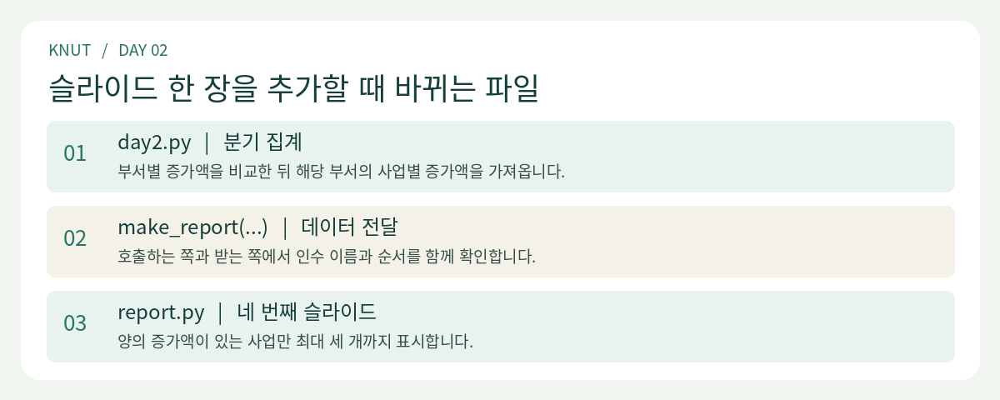
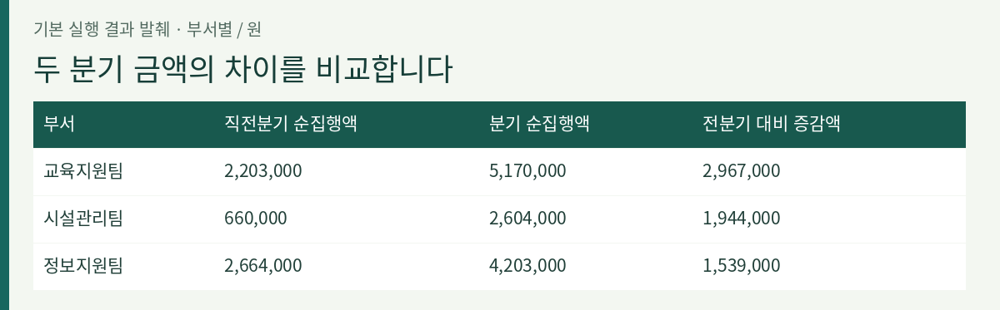
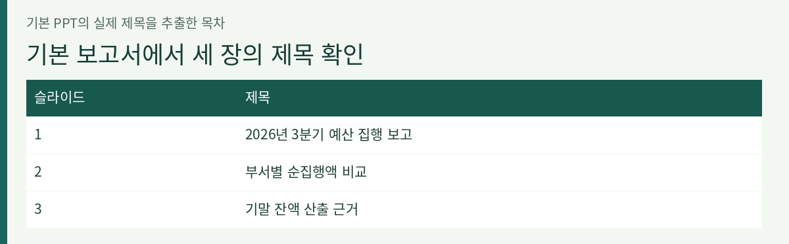
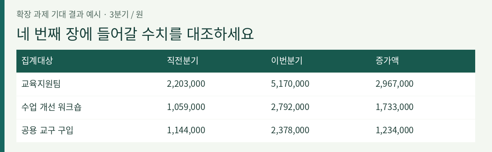
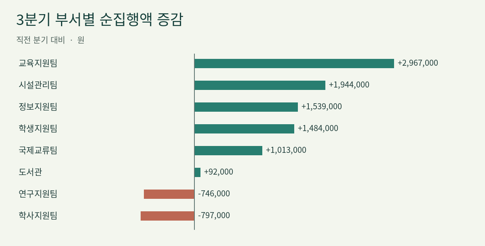

2일차 · 실습집행 증가를 설명하는 한 장
DAY 02어느 부서의 집행이 늘었을까요?
분기를 바꾸면 증가액이 가장 큰 부서와 기여 사업을 보여줍니다.

슬라이드 한 장을 추가할 때 바뀌는 파일 · 단계 안내도먼저 VS Code 터미널에서 아래 명령을 실행하세요. results/03_분기보고.pptx을 열어 현재 기능을 확인합니다.
py day2.py

기본 엑셀에서 증가액 상위 부서 확인 · 그림을 누르면 확대됩니다.
기본 PPT와 슬라이드 순서 확인 · 그림을 누르면 확대됩니다.기획팀 요청 — “부서별 그래프를 보니 어느 부서에서 지출이 늘었는지 궁금합니다. 지난 분기보다 집행액이 가장 많이 늘어난 부서와 그 증가에 기여한 사업을 한 장에 담아주세요.”
출발점 — day2.py를 실행해 예산분석 엑셀의 사업별·부서별 시트를 열고 기본 PPT 세 장을 확인하세요. day2.py에는 이미 계산 결과가 있고 report.py에서 슬라이드를 만듭니다.
개발할 기능
- 부서별 ‘이번 분기 순집행액 − 직전 분기 순집행액’을 비교하세요. 양수 중 가장 큰 부서를 고르고, 동률이면 부서명 오름차순 첫 곳을 선택하세요. 전체 합계는 순위에서 제외합니다.
- 선택한 부서 안에서 증감액이 양수인 사업을 최대 3개 뽑으세요. 증감액 내림차순, 동률이면 사업코드 오름차순입니다. 증가한 사업이 두 개면 두 개만 표시합니다.
- PPT 맨 뒤에 한 장을 추가하세요. 부서명, 두 분기의 순집행액, 부서 증가액, 사업별 이름과 증가액을 원 단위로 표시합니다. 증가한 부서가 없으면 같은 위치에 ‘전분기 대비 증가한 부서 없음’을 표시하세요.
- 기존 순집행액 계산과 엑셀 결과를 재사용하세요. 보고 대상 분기를 바꾸면 제목과 수치, 선택한 부서도 함께 바뀌어야 합니다.
무료 GPT에 전달할 맥락 — day2.py의 부서 집계 부분과 make_report 호출부, report.py의 함수 정의를 복사하세요. “이미 계산된 값 중 무엇을 재사용할 수 있고, 사업별 값을 슬라이드에 쓰려면 두 파일 사이에 무엇을 전달해야 하나요?”라고 물어보세요. Copilot이 변경한 두 파일을 확인한 뒤 실행하세요.
직접 검증 — 3분기 보고서를 만든 뒤 2분기로 바꿔 다시 실행하세요. 두 PPT를 각각 다른 이름으로 보관하고, 부서명과 증가액을 엑셀에서 독립적으로 대조하세요. 실습 결과는 금액 변동에 기여한 사업을 보여줍니다. 원장으로 확인할 수 없는 지출 사유는 추측하지 않습니다.

확장 후 네 번째 슬라이드의 금액 검산 · 그림을 누르면 확대됩니다.변경 확인과 제출
결과 파일을 닫고 다시 실행하세요. 기본 결과와 추가된 기능을 모두 확인한 뒤 변경한 코드, 생성한 파일과 테스트 기록을 보관하세요. Git으로 복제한 폴더에서는 다음 명령으로 수정 범위를 확인할 수 있습니다.
git diff -- day2.py report.py
무료 GPT 지시문 · Copilot으로 수정하고 검토하기

기본 결과 재검산 · 양수와 음수는 0선을 기준으로 반대 방향입니다.